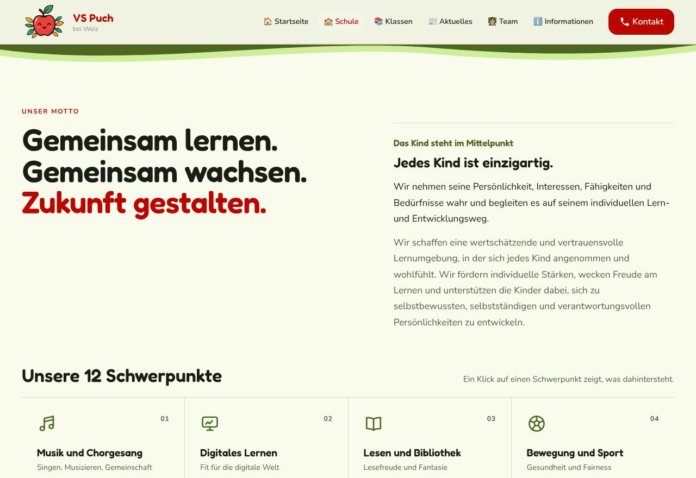

Variante F · Kombination aus E und A
Auf einen Blick, mit Einleitung und Ziel
Oben wie in E: großes Motto und daneben der vollständige Einleitungstext „Das Kind steht im Mittelpunkt" statt des Gütesiegels. Dann die 12 Schwerpunkte als Icon-Raster, ein Klick öffnet den Text. Unten der Ziel-Abschnitt aus A mit den drei farbigen Leitsätzen und dem Schlusssatz.